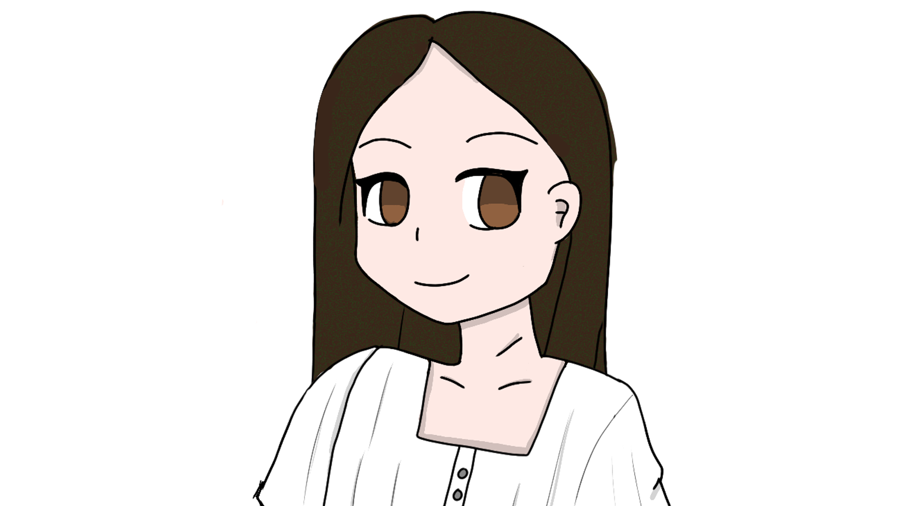

MY WORK
Here are some of the videos I have worked on as an editor.
Click to view video



Editor, Photographer, Aspiring artist, Man of many hats
My name is Kyle and I am a SUNY Oswego alum with a Bachelors in Broadcasting and Mass Communications. My hobbies include video games and drawing. I have a love for video games as mediums for story telling and interactive experiences. I also enjoy anime and manga a lot so I have picked up drawing in the style and work towards improvement when I have the free time. While my main hobbies are those two I have interest in music and can play the guitar and piano (although I've just started slowly learning piano).
Im really good at:
Windows and MacOS
Premiere Pro
Final Cut Pro
Photoshop
Photography
I'd love your feedback!